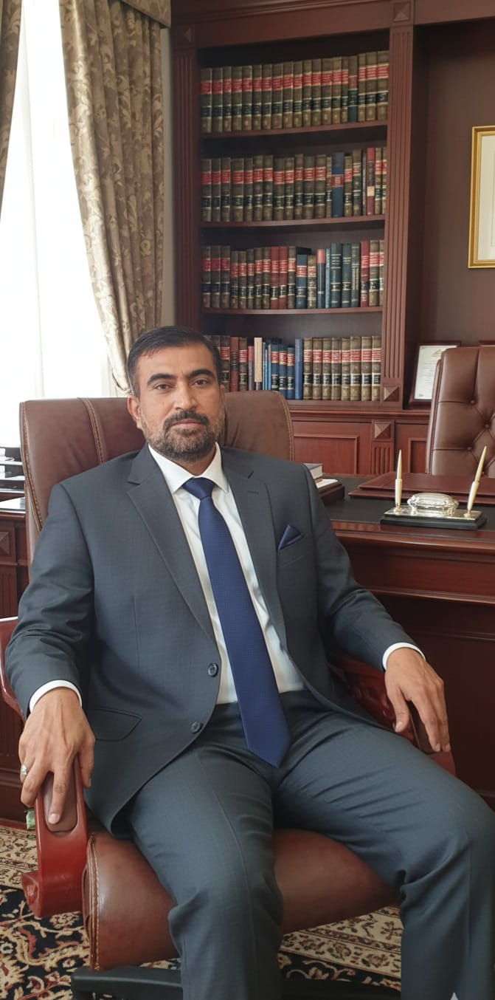

Dedicated to serving humanity with compassion, dignity, and social responsibility
Khwaja Gharib Nawaz Trust is a non-profit humanitarian welfare organization dedicated to serving humanity with compassion, dignity, and social responsibility. Inspired by the values of service, generosity, and care for the underprivileged, the Trust works to uplift vulnerable communities through welfare programs.
Our mission is centered on supporting individuals and families in need by addressing essential human needs such as food security, healthcare support, education assistance, and community welfare, while promoting values of harmony, compassion, and social well-being.
Alongside our humanitarian work, the Trust also preserves cultural and spiritual traditions as part of its community engagement activities. These initiatives are conducted with the aim of fostering unity, peace, and mutual respect within society.
Khwaja Gharib Nawaz Trust is a registered welfare organization committed to improving lives across Pakistan. Our work reflects the timeless principle of Khidmat-e-Khalq (service to humanity) by providing inclusive support without discrimination.

To build a society where every individual has access to basic necessities, lives with dignity, and receives support during times of hardship, while communities remain connected through shared values of compassion and harmony.
To serve humanity with sincerity, transparency, and accountability.
To provide sustainable welfare programs for underprivileged communities.
To promote social harmony and community well-being.
To support food security, healthcare, and education initiatives.
To encourage community engagement through ethical and responsible practices.
Rooted in justice, spirituality, and selfless service to humanity
Khwaja Gharib Nawaz Trust was established by a distinguished, well-educated, and noble family whose history is rooted in justice, spirituality, and selfless service to humanity. The Trust operates without any personal or commercial interest, serving as a continuation of generational welfare and moral responsibility.
• Founder & Spiritual Patriarch: The roots of this humanitarian mission trace back to the family’s ancestor, Sajjada Nashin Hazrat Khwaja Moinuddin Khamis (R.A.) (Nabira Khwaja Gharib Nawaz R.A.), a widely respected spiritual figure.
• Founder of the Trust: Late Syed Amir Moin Kazmi established the Trust to formalize and expand the family’s long-standing tradition of Khidmat-e-Khalq. His vision combined spiritual values with practical humanitarian action.
• Present Leadership: Today, the Trust and its spiritual heritage are led by his brother, Sajjada Nashin Pir Syed Adnan Mueen Kazmi (Current Chairman / Nabira Khwaja Gharib Nawaz R.A.). As a prominent spiritual leader of the Chishti order in Hyderabad, he continues to guide the Trust's welfare initiatives with complete transparency and dedication.
• Food Assistance: Daily rations, cooked meals, and community food distribution
• Health Support: Medical aid, health awareness, and emergency medical assistance
• Education Support: Assistance for orphans and deserving students
• Community Development: Clean drinking water and seasonal welfare campaigns
As part of our community outreach, the Trust facilitates cultural and social gatherings aimed at promoting peace, unity, and social values. These activities include community meals and public participation initiatives that encourage inclusiveness.
We are dedicated to empowering women by fostering financial independence. We provide skill training, resources, and guidance needed to earn a dignified income from home or establish small businesses.
We believe that supporting basic human needs is a shared responsibility. By focusing on welfare, compassion, and community support, Khwaja Gharib Nawaz Trust works to improve lives, strengthen communities, and provide hope to those in need.